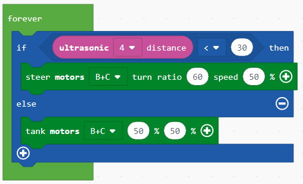

Projektni zadatak - Sretan ili Tužan¶
Do sada su svi programi koje smo kreirali bili linearni programi, točnije, to su programi u kojima se naredbe izvršavaju uzastopno, jedna za drugim do kraja programa.
Za razliku od ovih programa, gdje se svaki korak, tj. svaka naredba, izvršava jednom, u algoritmima za donošenje odluke, ili točnije, uvjetnim (granskim) algoritmima, neke će se naredbe izvršavati, a neke neće, što ovisi o tome je li uvjet ispunjen ili ne.
Dokazat ćemo uporabu blokova za donošenje odluka kreiranjem programa koji će na EV3 ekranu prikazivati različite slike, ovisno o tome je li senzor dodira pritisnut ili ne. Ako je senzor pritisnut, EV3 je sretan - na ekranu će se prikazati smiješak, a ako ne, na ekranu će se pojaviti tužno lice.
U nekim programima izvršavanje blokova ne mora se odvijati istim redoslijedom kojim su postavljeni u programu. Blokovi za odlučivanje koriste se kada trebamo odabrati koji će se niz blokova pokretati. Koja će linija (grana) biti odabrana ovisi o tome je li uvjet ispunjen ili ne. Za robota je li ispunjen ili ne uvjet ovisi o informacijama koje primi od senzora.
Da bismo stvorili program koji će prikazati osmijeh ili tužno lice, ovisno o tome je li senzor osjetljiv na dodir pritisnut ili ne, moramo pokrenuti novi projekt.
U blok  (nalazi se u kategoriji
(nalazi se u kategoriji  ) povući ćemo blok
) povući ćemo blok  iz kategorije
iz kategorije  . U polje za unos stanja
. U polje za unos stanja  povući ćemo blok
povući ćemo blok  .
Na temelju postavljanja zadatka, kada se senzor pritisne, program treba prikazati sretno (smiješno) lice. Moramo povući blok
.
Na temelju postavljanja zadatka, kada se senzor pritisne, program treba prikazati sretno (smiješno) lice. Moramo povući blok  iz kategorije
iz kategorije  u granu DA.
u granu DA.
Izgled programa kad se pritisne senzor i simulacija.

Vidimo da, čak i kad otpustimo tipku senzora, slika sretnog lica ostaje na zaslonu EV3 Brick. Da bismo ispravili ovu pogrešku, morat ćemo koristiti blok  .
.
Izgled programa kada se pritisne senzor.

Na temelju postavljanja zadatka, postoji i uvjet koji omogućava da se tužno lice prikaže na zaslonu EV3 brick-a kada senzor osjetljiv na dodir nije pritisnut. Da bismo to postigli, klikom na znak  moramo dodati još jednu granu “else”. Unutar ove grane dodati ćemo blok koji će na ekranu prikazivati tužno lice.
moramo dodati još jednu granu “else”. Unutar ove grane dodati ćemo blok koji će na ekranu prikazivati tužno lice.
Konačni izgled koda kada se senzor dodira pritisne ili ne pritisne i simulacija:

U ovom primjeru gornji redak koda pokrenut će se ako se pritisne gumb, a donji će se pokrenuti ako gumb nije pritisnut.
Da bismo to ilustrirali, dat ćemo još jedan primjer: Moramo stvoriti aplikaciju s kojom se robot kreće naprijed dok ne vidi prepreku (udaljenost bi trebala biti manja od 30 cm). Kad robot vidi prepreku, trebao bi se okrenuti udesno, pokušavajući ga zaobići.
U blok (nalazi se u kategoriji ) povući ćemo blok iz kategorije . U polje za uvjet povući ćemo blok  , koji je operator usporedbe. Da bismo stvorili uvjet gdje je udaljenost između robota i prepreke manja od 30cm, sastavit ćemo blok
, koji je operator usporedbe. Da bismo stvorili uvjet gdje je udaljenost između robota i prepreke manja od 30cm, sastavit ćemo blok  . Na temelju postavljanja zadatka, kada je prepreka udaljena manje od 30 cm, robot će skrenuti udesno; u protivnom će se pomaknuti naprijed (ako uvjet nije ispunjen, odnosno, robot ne vidi prepreku).
. Na temelju postavljanja zadatka, kada je prepreka udaljena manje od 30 cm, robot će skrenuti udesno; u protivnom će se pomaknuti naprijed (ako uvjet nije ispunjen, odnosno, robot ne vidi prepreku).
Dodat ćemo blok za okretanje  i za pomicanje naprijed
i za pomicanje naprijed  .
.
Izgled konačnog koda:
Spojite EV3 Brick s računalom putem USB kabela i preuzmite .uf2 datoteku na svoje računalo klikom na tipku  . Povlačenjem datoteke na EV3 spremno je za početak rada.
. Povlačenjem datoteke na EV3 spremno je za početak rada.